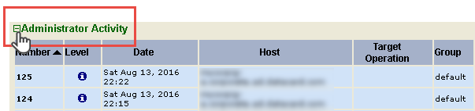
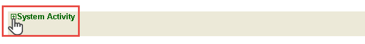

|
IdentityGuard Server 12.0 Administration Guide |
|
IdentityGuard Server 12.0 Administration Guide |
The Audit Monitor shows audit data in three categories:
● Authentication Activity — displays audited events related to user authentications. The events shown in this category are controlled by the Authentication Audit and Error Settings category in the Properties Editor. You can further filter the audits in the Audit Monitor.
● System Activity — displays audited events related to the overall Entrust IdentityGuard deployment, including authentications by administrators, and creation and deletion of objects such as users, groups, roles, policies and so on. The full list of system activity events can be seen in the Administration interface on the System > Find Audits tab. For simplification, the Audit Monitor categorizes the events as follows.
Create operations |
create, assign, load, import, issue, enroll |
Delete operations |
Delete, unassign, cancel, clean, wipe |
Modify operations |
Modify, activate, initialize,unlock, unblock, approved, sealed, register, suspend, hold, unhold, unregister, recover, encrypt, decrypt, manage |
Action operations |
Authenticate (administrators only), deliver, sign |
● Administrator Activity — displays audited events related to the activities of Entrust IdentityGuard administrators. Initially, the actions of the administrator that is currently logged in are shown.
There are several ways to modify the dataset to see only what is of interest to you.
Click the minus sign (-) beside the Activity or Activity Filter heading to hide a section that you do not want to see.

Click the plus sign (+) to display a hidden section again.

Use the filter criteria in each section to describe the audits you want to see, and then click Update Filter. Only audits that match your criteria are displayed. Each filter is associated with the logged-in administrator, and it remains in effect until you update it again, or until the end Entrust IdentityGuard server is restarted. The filter fields support the same wildcard capabilities as other parts of Entrust IdentityGuard. For example, if some of the instances of Entrust IdentityGuard server in your deployment are named by their location, you could use all or part of the name and one or more wildcard symbols (*) to specify them, for example: IG-Tor*. Click + to see details about each filter.
 Authentication
Activity Filter criteria
Authentication
Activity Filter criteria
System
Activity Filter criteria
Administrator
Activity Filter criteria
Use the Properties Editor to specify the Authentication-related events to audit. Only the specified audits will be displayed in the Authentication Activity list in the Audit Monitor. For more information, see Configuring authentication audits.
Click the value in the Number column to see additional information for a selected audit on the Audit Information page. That page also includes the Delete Audit button. You can delete an audit if you have solved a problem (for example, resolved a license issue) and no longer want the audit to appear in the audit database.
Note: The Audit Monitor is not designed to view older audits. To view older data stored in the audit database, see Viewing audits in the Administration interface.